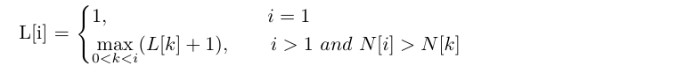

问题描述
请设计一个O(n2) 的动态规划算法来求出一个包含n 个元素的序列中的最长递增子序列。所谓递增子序列是指，从原序列中按顺序挑选出某些元素组成一个新序列，并且该新序列中的任意一个元素均大于该元素之前的所有元素。例如，输入的序列为< 5, 24, 8, 17, 12, 45 >，那么该序列的最长递增子序列为< 5, 8, 12, 45 > 或< 5, 8, 17, 45 >。请分析你的算法的正确性并验证其时间复杂度。
思路分析
此题可以使用动态规划的方式求解，先写出状态表示为L[i], 其含义为以i号位置为终点的最长递增子序列长度（下标默认从1开始，注意与实际代码的区别）。为了方便问题的描述，我们将输入序列标记为N[i]。
接下来开始探究此题的状态转移方程。若i为1，则L[i]=1这点无需置疑，重点在于i大于1的情况。我们依次分析，先从简单的情况开始，若是i为2，我们需要具体分析：
若是N[2] > N[1]，则L[2] = L[1]+1；
反之N[2] < N[1]，则L[2] = 1。
此类情况比较简单，但是足够说明问题，若是i比较大，在考虑i位置的最长递增子序列长度时，需要依次与i之前的位置进行比较，若是N[i] > N[k] (k<i)，则暂定P[i] = P[k]+1，依次与i之前的位置位置比较，确定满足条件的最大值作为P[i]。因此：

算法流程
算法实现-JAVA
此处实现只是简单的依照上述流程所写的代码，使用leetcode最长上升子序列的测试用例顺利通过，但时间复杂度还有待优化。
1 | public int lengthOfLIS(int[] nums) { |